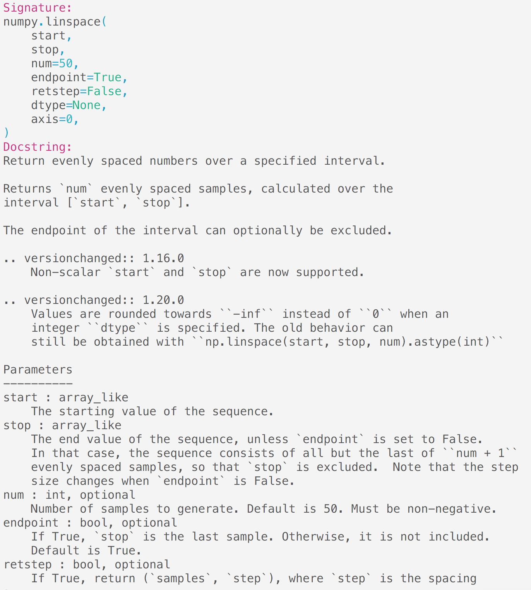
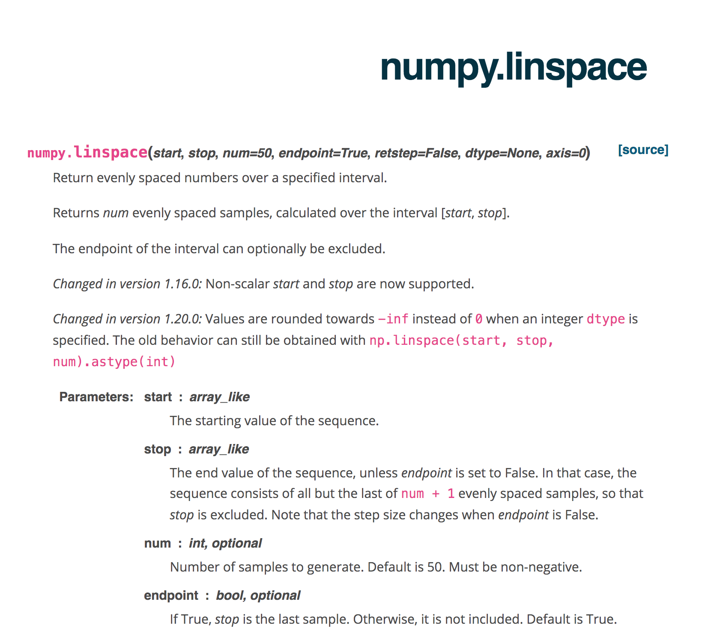
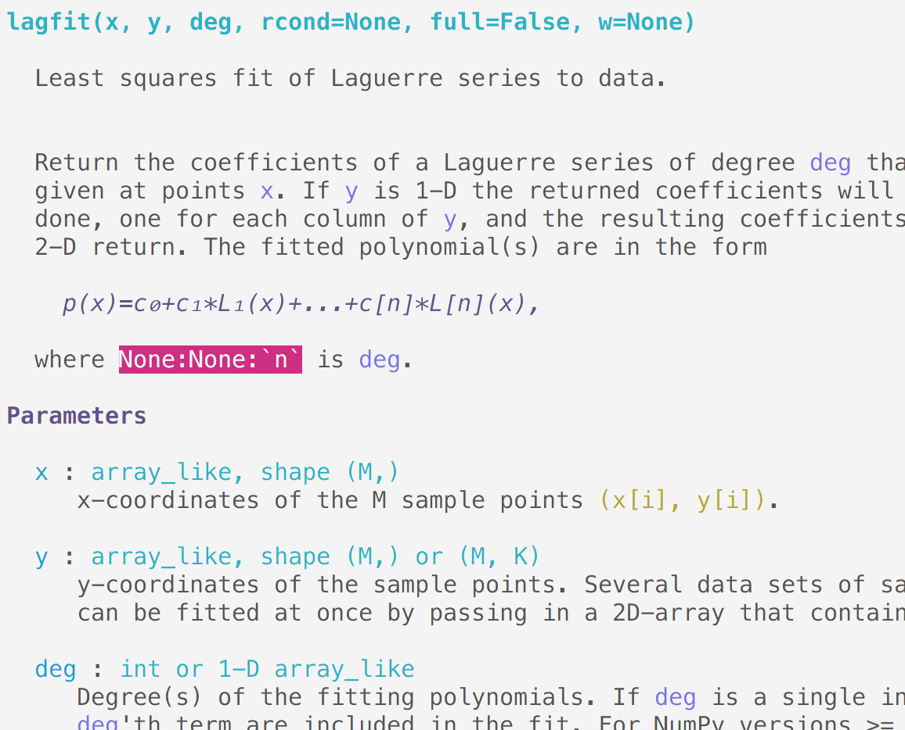
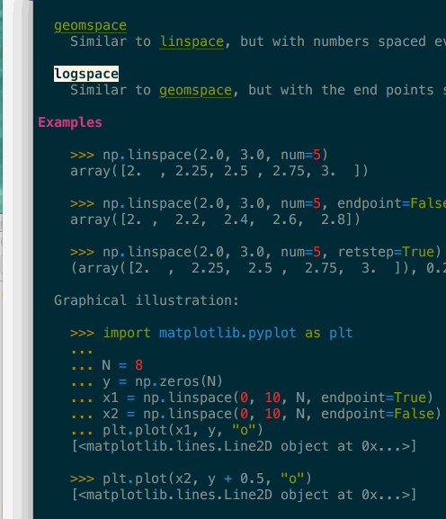
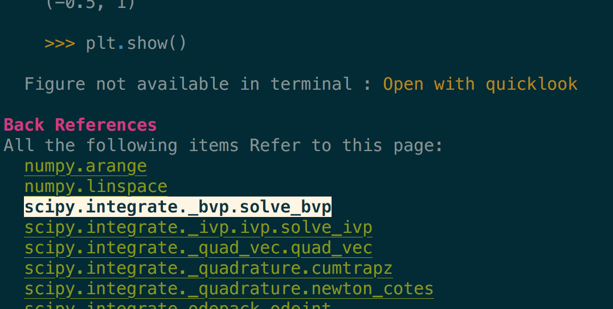

Rethinking Jupyter Interactive Documentation
Jupyter Notebook first release was 8 years ago – under the IPython Notebook name at the time. Even if notebooks were not invented by Jupyter; they were definitely democratized by it. Being Web powered allowed development of many changes in Datascience world. Objects now often expose rich representation; from Pandas dataframe with as html tables, to more recent Scikit-learn model.
Today I want to look into a topic that has not evolved much since, and I believe could use an upgrade. Accessing interactive Documentation when in a Jupyter session.
The current limitation for users
The current documentation of IPython and Jupyter come in a few forms, but mostly
have the same limitation.
The typical way to reach for help is to use the ? operator. Depending on
the frontend you are using it will bring a pager, or a panel that will display
some information about the current object. Here is the documentation for
numpy.linspace

It can show some information about the current object (signature, file, sub/super classes) and the raw DocString of the object.
You can scroll around but that's about it wether in terminal or Notebooks.
Compare it to the same documentation on the numpy website:

Compared to online documentation viewed from within jupyter, the documentation is: - Hard to read, - Has no navigation - RST Directives have not been interpreted. - No inline graph , rendered rendered math.
There is also no access to non-docstring based documentation, like narrative, tutorials, image gallery or examples, no search, no syntax highlighting, no way to interact or modify documentation to test effects of parameters.
Limitation for authors
Due to Jupyter and IPython limitations to display documentation I believe authors are often contained to document functions.
Syntax in docstrings is often kept simple for readability, this first version is often preferred:
You can use ``np.einsum('i->', a)`` ...
While the longer form that would provide an helpful link in Sphinx rendered docs, it is shun as difficult to read.
You can use :py:func:`np.einsum('i->', a) <numpy.einsum>` ...
This also lead to long discussion about which syntax to use in advance area, like formulas in Sympy's docstrings.
Many project have to implement dynamic docstrings; for example to include all
the parameter a function or class, would pass down using **kwargs, (search
matplotlib source for _kwdoc , or pandas DataFrame for example.
This can make it relatively difficult for authors and contributors to properly maintain and provide comprehensive docs.
I'm not sure I can completely predict all effects this has on how library maintainers write docs; but I believe there is also a strong opportunity for a tools to help there. See for example vélin which attempts to auto reformat and fix common NumyDoc's format mistakes and typos.
Stuck between a Rock and a Hard place
While Sphinx and related project are great at offering hosted HTML documentation; extensive usage of those make interactive documentation harder to consume;
While It is possible to run Sphinx on the fly when rendering docstrings, most Sphinx features only work when building a full project; with the proper configuration and extension and can be computationally intensive. This make running Sphinx locally impractical.
Hosted website often may not reflect locally installed version of the libraries and requires careful linking, deprecation and narrative around platform or version specific features.
This is fixable
For the past few month I've been working on rewriting how IPython (and hence Jupyter) can display documentation. It works both in terminal and html context with proper rendering, and currently understand most directives; and could be customized to understand any new ones:

Above is the (terminal) documentation of scipy.polynomial.lagfit, see how the
single backticks are properly understood and refer to known parameters, it
detected that `n` is incorrect as it should have double backticks; notice
the rendering of the math even in terminal.
For that matter technically this does not care as to whether the DocString is written in RST or Markdown; though I need to implement the later part. I belive though that some maintainers would be quite

It support navigation – here in terminal – where clicking or pressing enter on a link would bring you to the target page. In above gif you can see that many token of code example are also automatically type-inferred (thanks Jedi), and can also be clicked to navigate to their corresponding page.

Images are included, even in terminal when they are not inline but replaced by a button to open them in your preferred viewer.
I'm working on a number of other features, in particular :
- rendering of narrative docs – for which I have a prototype,
- automatic indexing of all the figures and plots – working but slow.
-
proper cross library reference and indexing without the need for intersphinx
- It is possible from the
numpy.linspacepage to see all page that reference it, or use it in an example (see previous image).
- It is possible from the
And many others, like showing a graph of the local references between functions, search, and preference configure ability. I think this could also support many other desirable features, like user preferences (hide/show type annotation, deprecated directives,and custom coloration/syntax), though haven't started working on these, and I have some ideas on how this could be uses to provide translations as well.
Right now is it now as fast as efficient as I would like to – though it's faster than running sphinx on the fly – but required some ahead of time processing. And crash in many places, so I'm not going to link to it here yet;
I though encourage you to think about what features you are missing when using documentation from withing Jupyter and let me know.
For now I've submitted a Letter of intent to CZI EOSS 4 in an attempt to get some of that work funded to land in IPython, and if you have any interest in contributing or want something like that for your library, feel free to reach out.
I'll make the repository public in I hope a near future; right now it is too unstable and with too many hard coded path to be useful, but once it is in a more stable, and better documented [sic] for public feedback.